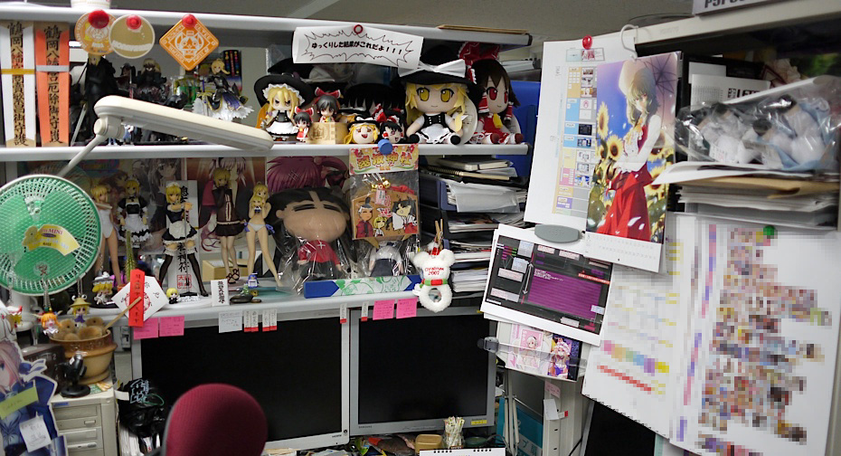
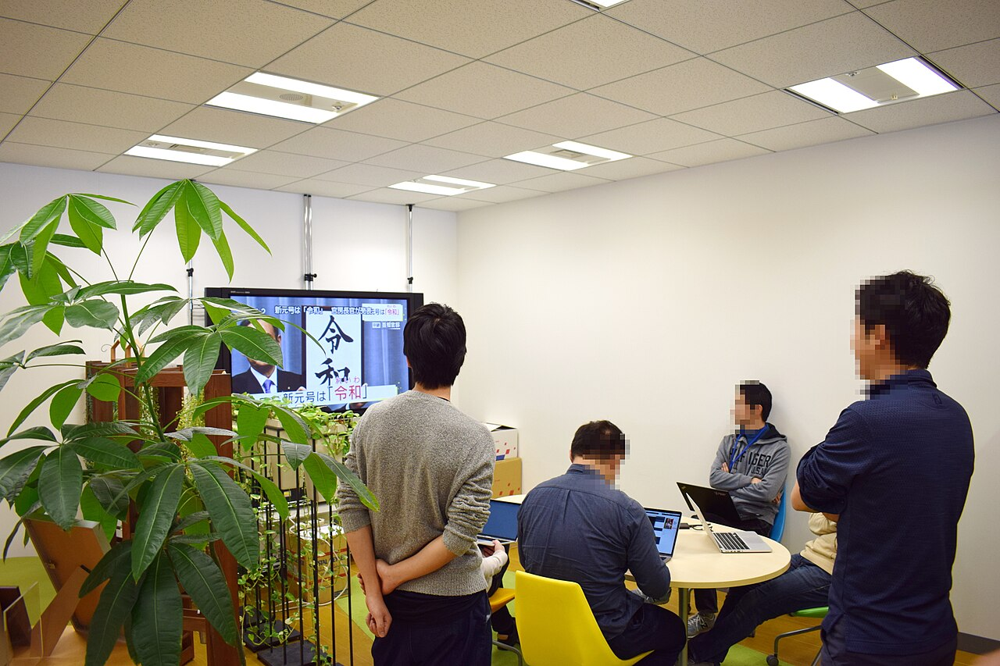

求人、轉職，和用得到中文的工作機會。
工作 · YU · 2026.11.17
令和 8 年分改正把基礎控除拉到 62 萬到 104 萬日圓，年收的壁跟著搬家，副業和醫療費還是要自己申告

程式設計師的一天大多在寫程式和開會，企劃這個職稱在日本遊戲業有它自己的意思

工作 · 腸鍋 · 2026.11.17
東京、40 歲未滿、獨身的試算，健康保險加年金就佔了大半，實領約 23 萬 7 千
 住日本幹嘛啦
住日本幹嘛啦